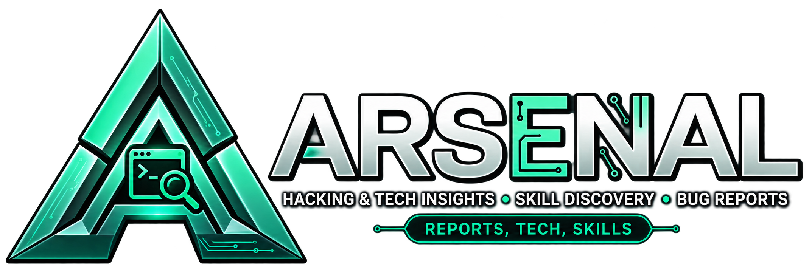

Purpose
Make hands-on cybersecurity learning easier to explore and connect.

Database onlineHYBRID PROFESSIONAL ENGAGEMENT REPORTS
Loading reports...
Try another technique, technology, or difficulty level.
LEARNING APPROACH
ABOUT ARSENAL
Arsenal was built to turn technical engagements into clear, reusable learning material. It brings the evidence, techniques, and lessons of each machine together in one focused place.
Make hands-on cybersecurity learning easier to explore and connect.
Build an open, practical reference for the next generation of security practitioners.
Document each path clearly—from reconnaissance to privilege escalation.
Made by a cybersecurity learner who believes knowledge becomes more valuable when shared.